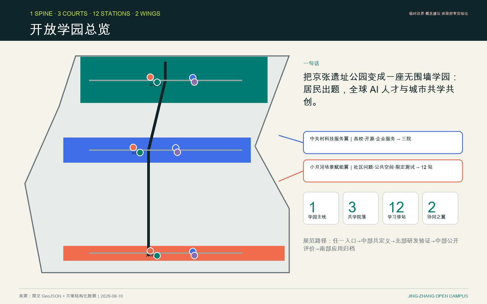
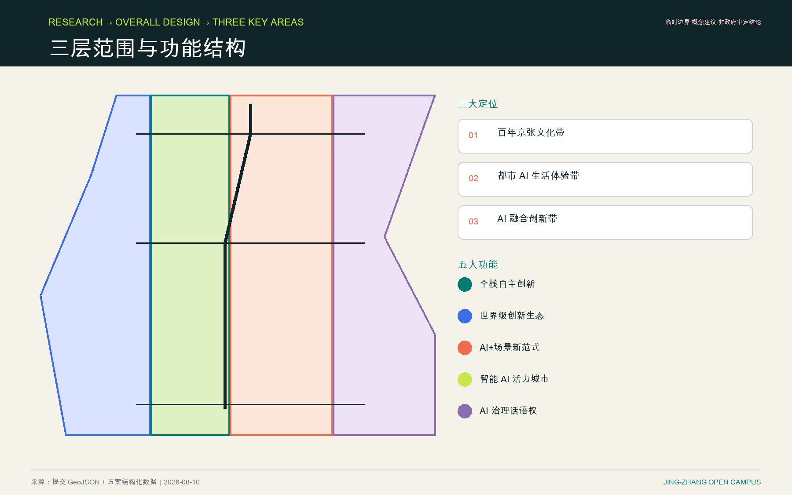
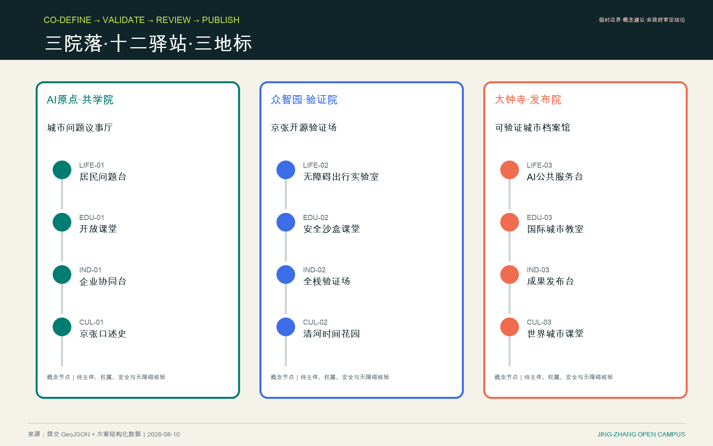
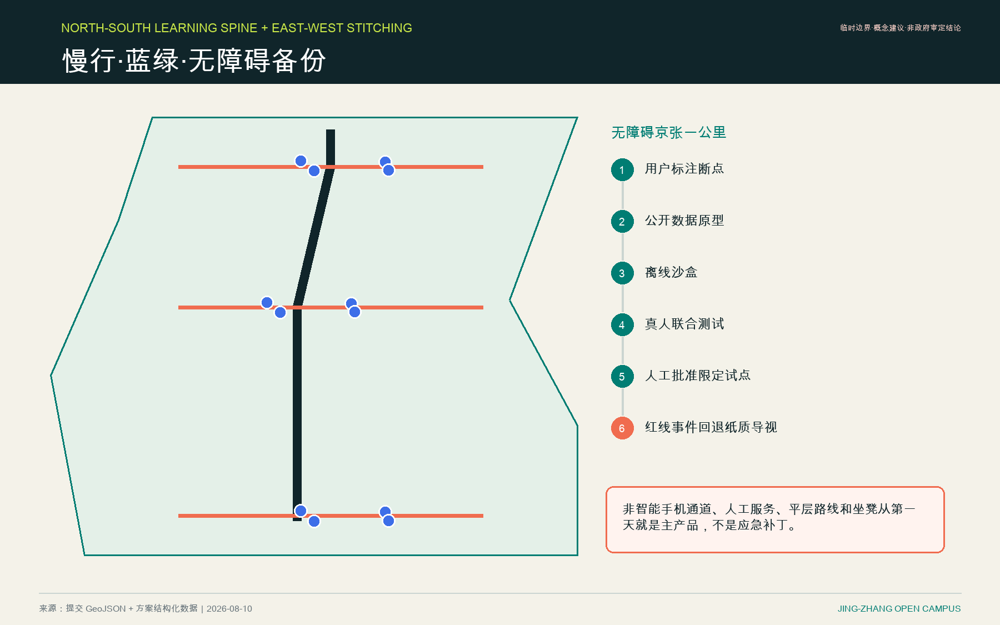
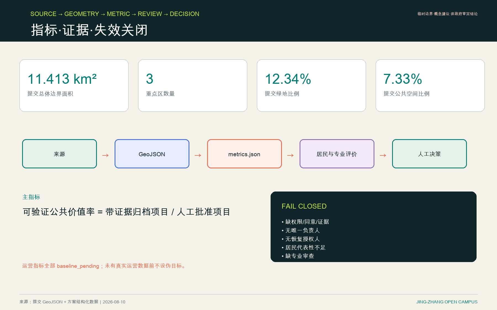

线下/线上登记真问题
空间与治理同一条路径
任一入口→中部共定义→北部研发验证→中部公开评价→南部应用归档→
Open City Semester12 周共创 + 20 周看护人试点 + 8 周复盘关闭
居民出题，全球 AI 人才、高校、企业与居民共同组队。
总览地图


三层范围·用地分区·两翼接入三院十二站
中关村科技服务翼
高校、开源与企业服务接入三院；是协同关系，不是新边界。
小月河场景赋能翼
社区问题、公共空间与限定测试接入十二站；位置待官方数据核验。
建筑与更新项目
保留优先；首层、院落、公园门槛和既有服务空间先复用。拆改留、强度、权属、消防和市政条件待专业确认。
- JZ-01 Accessibility stitching
- JZ-02 Qinghe interface
- JZ-03 Co-learning street
- JZ-04 Four-quadrant walking
- JZ-05 Governed AI nodes
- JZ-06 Semester route
12 学习驿站
一公里无障碍路线共测
人工可接管的健康与政务导航
AI入门、问题定义与公共价值
数据伦理、红队与回退演练
跨文化组队和城市方法互认
公共问题与工具能力双向匹配
可复现、可审计、可立即停止的测试
仅发布通过审查的成果与负面结果
居民、史学者共同校核时间线
铁路、河道与技术变迁的公共叙事
国际案例、失败经验与方法归档

重点区域与 AI 场景 · 12 张场景卡
- SC-01 居民问题共定义 L0
- SC-02 无障碍京张一公里 L1
- SC-03 AI公共服务导航 L2
- SC-04 开放 AI 素养课 L0
- SC-05 AI安全沙盒 L2
- SC-06 国际城市方法工作坊 L0
- SC-07 企业服务协同助手 L2
- SC-08 全栈模型可复现验证 L2
- SC-09 可验证成果发布 L1
- SC-10 京张口述史共创 L2
- SC-11 低速机器人人机共行测试 L3
- SC-12 Open City Semester 公共路线 L1
交通慢行、蓝绿公共空间与无障碍备份

四方治理
政府
公共数据、现场批准、紧急停止与恢复
社区
问题定义、居民材料、公开评价与退出权
高校
方法、实验记录与学术完整性
企业
沙盒工具、现有 IP 与产品安全
6A 资产级唯一责任
居民问题与材料
A: 社区
R: 驿站问题台
恢复：社区负责人
方法与实验记录
A: 高校
R: 研究团队
恢复：高校项目负责人
工具与产品安全
A: 企业
R: 工程与安全团队
恢复：产品安全负责人
公共数据与现场试点
A: 政府/法定公共机构
R: 授权数据/现场团队
恢复：原批准主体
完整的 8 项资产矩阵、备份、停止权和升级路径见 governance-state-machine.json；角色均未承诺，进场前须实名授权。

核心指标与证据
11,412,825.386 m²provisional geometry12.3423%submitted design geometry7.3281%submitted public-space geometry
52 周运营
1‑4 → 5‑8 → 9‑20 → 21‑24 → 25‑44 → 45‑52
自检状态：Fail closed
缺权限、证据、同意、唯一负责人、恢复路径或专业审查时，不进入现场。
任务覆盖·来源·假设·自检状态
任务覆盖
公告 1.3、1.4、1.5 与 agent.1-agent.6 均映射到正文、图层、图纸和矩阵。
来源
sources.json · data/source_registry.json · standard_matrix.json
假设
临时边界、控规、权属、市政、主体、预算与真人测试均保留待确认状态。
自检状态
机器校验通过不等于政府审定；精度敏感结论仍须专业确认。